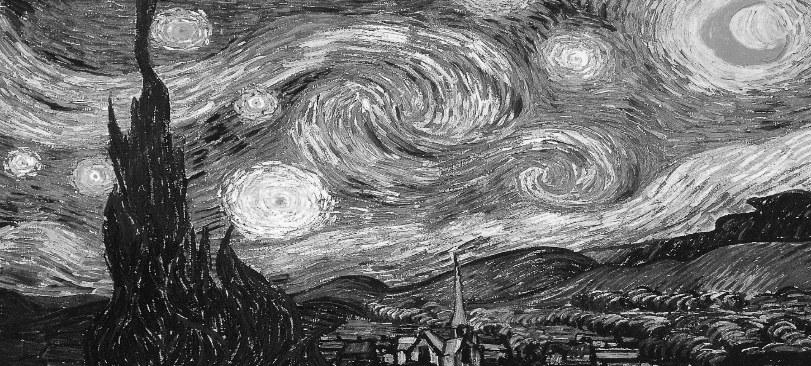
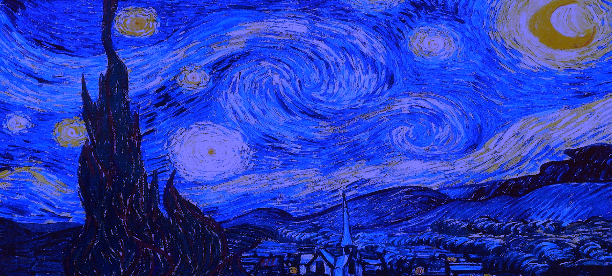
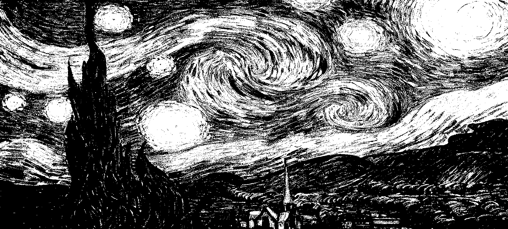

Transforming Van Gogh's Starry Night
Concept
This project delves into the fusion of classical art and digital transformation by applying a range of rippling effects to Van Gogh's "The Starry Night." The code generates a dynamic visual experience, where various effects sweep across the canvas in both circular and square patterns, uncovering different elements of the iconic painting while momentarily concealing others.
Technical Implementation
- Utilizes p5.js to manipulate pixels of Van Gogh’s "The Starry Night" through eight distinct effects —
- Greyscale (Square Ripple)
- Invert (Circular Ripple)
- Cool Tones (Circular Ripple)
- Black & White (Square Ripple)
- Red-Green Gradient (Slow Circular Ripple)
- Saturation Adjustment (Circular Ripple)
- Color Shift (Circular Ripple)
- Normal (Circular Ripple)
- Each effect moves across the canvas in either an inward or outward direction, creating a mesmerizing dance between the original artwork and its digital transformation.
- The entire cycle completes in exactly one minute, with the redGreenGradient effect moving notably slower than the others to create rhythmic variation.






Artistic Decisions
- Square vs. Circular Ripples — The decision to implement both square and circular ripple patterns creates an interesting tension between organic and geometric forms, mirroring Van Gogh’s own exploration of natural and mathematical patterns in Starry Night.
- Effect Selection — Each effect was chosen to reveal different
aspects of the original painting.
- Greyscale strips away color to reveal underlying tonal relationships
- Cool tones emphasize the night sky’s ethereal quality
- Black & White reduces the image to its most basic light/dark relationships
- Red-Green Gradient introduces new color relationships while maintaining the original structure
- Timing — The one-minute cycle creates a meditative experience, allowing viewers to anticipate and recognize patterns while maintaining engagement through constant pixelated variations.
Tools & Frameworks
- Developed interactive functionality using p5.js for pixel manipulation and dynamic visual effects to control the application of visual effects and manage transitions between different transformations of the artwork.
- Customized responsive, user-centric design through CSS and HTML to enhance visual aesthetics and ensure seamless interaction across devices.
WHEN WAS THIS?
Dec 2024 (2 weeks)
WHAT'D I DO?
In this two-person project with Yafira, I contributed by establishing the foundational code and overall structure, collaborating closely on the development process.
While we both worked on various aspects of the project, I played a key role in setting up the architecture and ensuring the seamless integration of our code, from ideation through to deployment.
My responsibilities include:
- UI/UX Design & Front-End Development — Created an interactive, responsive UI using HTML, CSS, and p5.js to manipulate images in real-time, offering a dynamic split-screen experience with seamless user controls.
- Pixel Manipulation & Visual Effects — Implemented complex pixel manipulation algorithms to apply eight distinct effects on an image, optimizing performance for smooth, real-time user feedback.
- Behavior-Driven Interaction — Designed and coded intuitive, mouse-driven controls to dynamically adjust the effects, ensuring a fluid and engaging experience for users.
- Collaborative Code Architecture — Led the technical implementation, collaborating with Yafira to modularize code, integrate effect properties, and optimize performance for future scalability.
- Performance Optimization & Testing — Focused on performance efficiency, conducting iterative testing to ensure visual consistency and responsiveness across devices while maintaining high-quality effects.